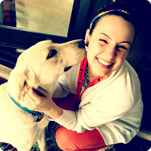

About
Hi, I'm Kassia.
I'm a writer, editor and proofreader with experience in news media, public relations, marketing and communications.
I was born and raised in Raleigh, North Carolina and lived there until I started at Northwestern University's Medill School of Journalism in the fall of 2006. I graduated in June 2010 with a Bachelor of Science in Journalism with a concentration in magazine writing and editing, plus a second major in Spanish.
Until my high school AP Composition class, I never thought much about writing. That's when I realized there's a lot that goes on between a five-paragraph essay and a 500-page novel: blog posts, press releases, ad copy, news articles, even Facebook and twitter posts. Since then, I've become an expert at writing, editing and proofreading all of the above and then some.
In my spare time, I love both writing and reading fiction, riding my bike and eating pork belly tacos. I adore both cats and dogs, and one day when I don't live in a tiny city garden unit apartment, I'll have one of each.
Portfolio
Blog pieces
Doggywoof
- Six Reasons to Get Your Dog a Seatbelt
- The Nine Must-Have Dog Products for Winter
- Seven Great Products for the Outdoorsy Pup
- Bringing Home a Second Dog
- Breed Highlight: Yorkshire Terriers
- Breed Highlight: Labrador Retrievers
Cakestyle
- Elements of Style | Holiday Cocktails
- Style Icon: Mila Kunis
- Elements of Style | Stationery
- What to wear to ask the boss for a raise
- Elements of Style | Nails
- Elements of Style | Technology
- Elements of Style | Hair
- What to wear to a post-work happy hour
- [trend alert] NEON
Bookyap
Website Text
Press releases
- Sandbox Ventures Invests in Daily Deals Site Doggyloot
- Sandbox Industries Promotes Five New Managing Directors
News Articles
Incentive Magazine
- International Up and Coming Destinations: Northern Ireland
- International Up and Coming Destinations: Vietnam
- Motivating the Millenials
- Netting a Partnership with the Nets
- Des Moines Register Defends Incentive Travel
- La Maison du Chocolat's Sweet Summer Rewards
- Motivation in Action: Time Off to Rock
- Motivation in Action: A Luckie Lunch Break
- Corporate Social Responsibility: Gifting for Good
- The Greenbrier Gets a New Lease on Life
- Motivation in Action: Breaking Away from the Pack
- Pressure and Stress are Hitting Workers Hard
- Research Says Poor Team Spirit Leads to Depression
- Gap, Inc. Opens Up Options
- Ritz-Carlton's New Destination Club
- Microsoft Dynamics Offers New Customer Incentives
- Group Travel Makes Way for Individual Incentive Trips
- Fina Offers Tips on Being a Strong Manager
- Giving Incentives to Learn English
- PromoCard Services Upgrades Music Platform to Create Better Rewards
- Epic International Uses Incentives to Reach New Customers
- Riviera Nayarit's Expansive Offerings
- Motivation in Action: Adventure Life's Outdoor Incentives
- An Indochina Incentive
Infographics
Doggyloot Deals
Miscellaneous
Résumé
Education
Northwestern University
- Bachelor of Science, 2010
- Double major in Journalism and Spanish
- 3.5 GPA in major
Experience
Communications Analyst | Sandbox Industries
February 2011 - Present | Chicago, IL
- Worked as Director of Communications for startup companies incubated within Sandbox Industries, including CakeStyle, doggyloot, Lab42, and Lost Crates
- Created compelling decks for quarterly all-employee meetings
- Produced quarterly newsletters for investors, advisors and friends of Sandbox
- Maintained "News" portion of Sandbox website to include up-to-date news on all companies
-
Cakestyle | cakestyle.com
- Gained blog traction with weekly posts about women's fashion and lifestyle
- Created compelling web ads posted on Allure, Vanity Fair, Vogue, etc.
- Ran nationwide advertising campaigns with Condé Nast, Glam Media, etc.
- Placed sponsored and earned press on FashionIndie, Glass Heel, etc.
- Produced monthly newsletters featuring original content
-
doggyloot | doggyloot.com
- Researched and wrote four to five successful deals every week
- Wrote and edited press releases that garnered nationwide press attention
- Created the voice of the brand through website copy, ads, and deal text
- Assisted with merchant relations to keep operations running smoothly
- Launched doggyloot's popular blog, doggywoof, and produced content weekly
-
Lab42 | lab42.com
- Generated high-profile sales leads through targeted "special delivery" campaign
- Created the voice of the brand through website copy
- Edited a series of custom infographics featured on Mashable and other sites
-
Lost Crates | lostcrates.com
- Wrote and edited press releases that garnered nationwide press attention
- Created the voice of the brand through website copy
- Led blogger outreach campaigns to acquire customers and attract media attention
Media Analyst Intern | Edelman - StrategyOne
June 2010 - December 2010 | Chicago, IL
- Monitored and analyzed various news outlets daily for clients, including The Hartford, Canon, and Microsoft
- Wrote comprehensive reports analyzing key messaging in media
Editorial Intern | Incentive Magazine
March 2009 - June 2009 | New York, NY
- Researched and interviewed subjects for one to two online articles daily
- Wrote one to two full length feature pieces for the print magazine each month
Skills
- Able to write in a variety of tones and styles, adapting to any website or blog
- Fast typist (90+ WPM) with both live and recorded transcription experience
- Proficiency in Microsoft Office (Word, Excel, PowerPoint)
- Experience writing content with blogging platforms (WordPress, Tumblr and Blogger)
- Intermediate HTML knowledge
- Experience planning and writing email marketing campaigns using MailChimp
- Accustomed to working on a deadline and producing work under pressure
- Experience with both customer and client relations
Languages
- Spanish (conversational)
- German (beginner)
Activities & Awards
Northwestern Swimming | 2006 - 2010
- Named NCAA All-American in 2008
- Four-time Big Ten Swimmer of the Week
- Voted MVP in 2010